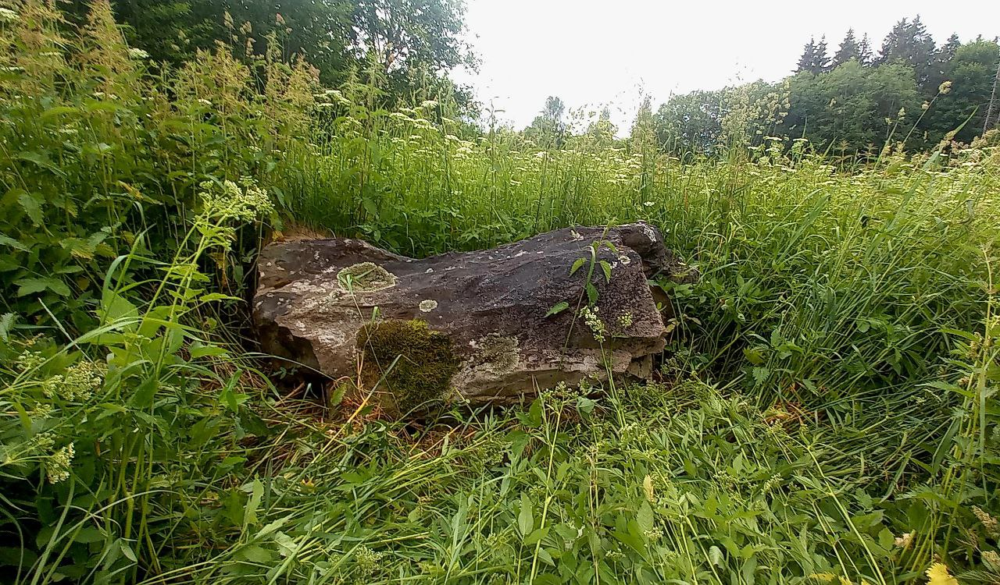
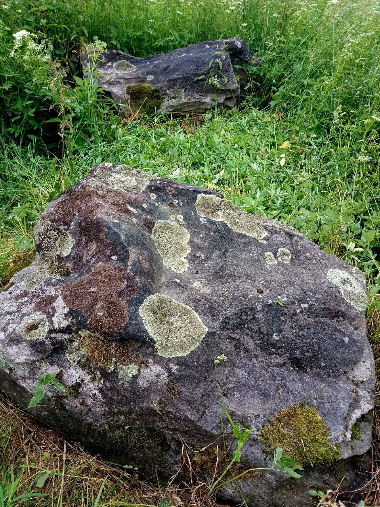

У траве ля закінутага дома, ля падножжа пагорка ляжаць два вялізныя валуны. "Камяні як камяні," - скажаце вы. А што, калі гэты адзіны знойдзены ва Усходняй Еўропе ідал бога вятроў Веэса, расколаты галоўным паганскім богам Пяруном на дзве часткі? Цікава? Тады вам сюды!
 
Пра тое, што вялізныя чорныя валуны - гэта дзве часткі аднаго паганскага ідала, гаворыць і вядомы літоўскі балтазнавец і гісторык Вікінтас Вайчкавічус. Раней ідал стаяў на капішчы на ўзвышшы, а зараз ляжыць расколаты недалёка ад дарогі.
Геолагі пацвердзілі, што некалі камень быў цэльны і дасягаў трох метраў у вышыню. Камень мае вельмі шчыльную структуру, чорны колер.

Звесткі пра багоў вятроў засталіся ў паданнях розных народаў, але ідал быў знойдзены толькі ў нас у Беларусі мясцовым краязнаўцам з Лынтупаў Алесем Гарбулем. Само ўрочышча, дзе ляжыць камень, называецца Вайшскі Лог. Назва мае санскрыцкія карані і ў перакладзе азначае "нізіна бога вятроў".

Існуе 3 версіі, чаму раскалоўся камень.
Згодна першай версіі, яго разбілі хрысціяне падчас хрысціянізацыі гэтых земляў.
Друга версія, паганская, распавядае пра тое, што раскалоўся камень у выніку супрацьстаяння бога грому і маланкі - Пяруна і бога вятроў-Вееса. Веес аказаўся слабейшым, і Пярун раскалоў яго на 2 часткі.
Згодна трэцяй, сучаснай версіі, з-за шчыльнасці складу каменя ў яго часта біла маланкамі, і адзін з удараў стаў фатальным...
Камяні маляўнічыя і незвычайныя. Заходзьце ўшанаваць рэшткі старажытнага бога!
Запісала Даша Тэрро